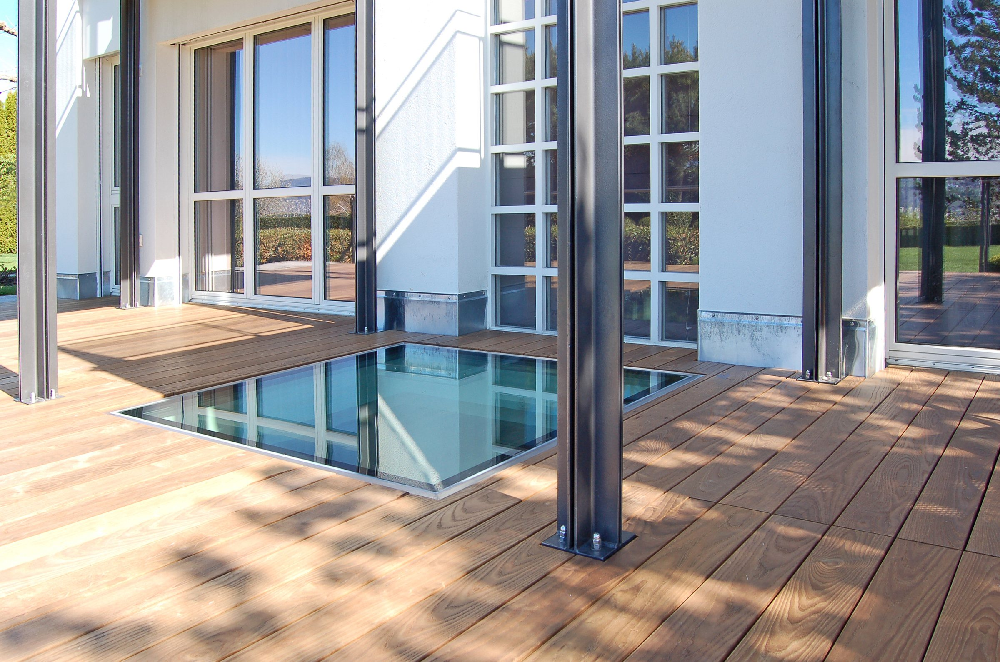

Denní světlo v suterénu: když se světlo stává součástí konstrukce
Přednáška pro studenty architektury a stavebního inženýrství na ČVUT: jak dostat přirozené světlo pod úroveň terénu.
Číst celý článek
Novinky, realizace a zkoušky. Co se u pochozích světlíků a denního světla v suterénech děje.
Přednáška pro studenty architektury a stavebního inženýrství na ČVUT: jak dostat přirozené světlo pod úroveň terénu.
Číst celý článekTestovací video: pochozí světlík GLASSFLOOR a extrémní zatížení, které se v běžném provozu nestává.
Číst celý článekWT-WINDOWS TOMORROW se posouvá od jednoho produktu ke třem řešením: světlovody, pochozí světlíky a zrcadlové šachty.
Číst celý článekZ projektu ve Švýcarsku: suterén jako plnohodnotný obytný prostor díky pochozím světlíkům a zrcadlovým šachtám.
Číst celý článek